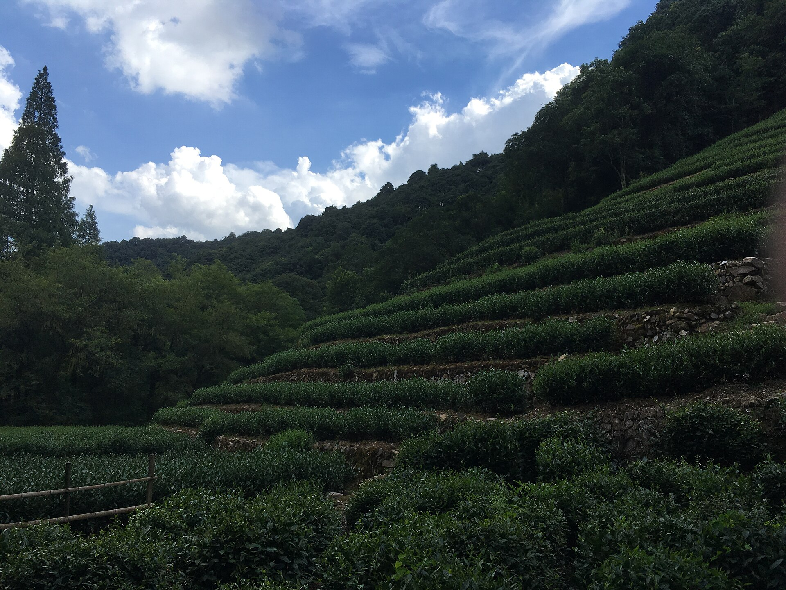

中文版
把中国茶写成立得住、也读得进的内容现场
这里不只讲茶名，也讲山场、工艺、器物、时令和当代茶饮。首页会持续更新两条线：一条看最新发布，一条看最值得新读者先点开的代表文章。

Latest
最新发布
按近期更新与首页代表性整理，优先展示刚发布、正在扩展站点版图的新内容。
Editor's Picks
最热 / 最值得看
当前站内暂无真实 analytics，本组按编辑精选整理：优先主题吸引力强、信息密度高、能代表本站气质、适合新访客先读的文章。
Sections
继续浏览
如果你想按主题而不是按单篇进入，可以从这几个栏目继续往下看。